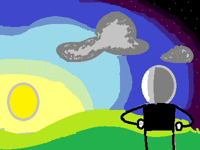

Workspage
This is the side of the website where I post my finished works for your eye to see.
Some works good, some funny, and some just straight up awful depending on how you see
it.
Works tagged with black are literature, crimson brown for W.I.P. updates, and red for artworks.
W.I.P. Update No.2: Chapter 2. 6th draft. July of 2022
After a bit of tweaking and all, I was able to finish up chapter two. Remember that this is a W.I.P. so it will differ from the final manuscript. Nevertheless, see for yourself what I've written.
Chapter 2: The Runaway
He stood up, and looked through his room under dim moonlight. He reached towards his table, scrambling through the drawers of his table and picked up a flashlight from one of the drawers and grabbed it off like he would do with a dollar if he ever saw one.
Paull started his way towards the kitchen, tip-toeing. The dark hallways, only illuminated by his bad flashlight, made the cold floors he knew inside out alien once again.
Once reaching the kitchen, the faint smell of rust slid through his nose, the basement key was found! "All those games of hide and seek really did help." he thought.
Upon reaching the basement with the greeting sound of a creaking old door, Paull was greeted by a long staircase. In the basement, Paull looked for the backpack he previously put in the basement, using his hands and memory to find the backpack he filled with clothes, toothpaste, soap, water, a mini radio, and some books. The squeaks of roaches in the basement led a disgusted Paull to the backpack.
After leaving the basement, he opened the fridge and grabbed a plastic bag lying right beside the fridge, packing every single one of the foods inside. Expired mayonnaise accidentally spread through the house slowly, indicating that Paull needed to close the fridge, and leave the mayo behind.
The plan is now finally complete! Paull opened the kitchen window and flew out.
...
Dear Mom and Dad:
I've escaped from home. It will be a bit of time between me and you two (hopefully it's only 4 years or something like that, I assume). Don't worry about me, I've almost robbed you of all the things I need. Also, screw you!!
You and your "busy work schedules" and "extremely important meetings I have to attend because GOD KNOWS WHY!" If all you talk about is your job then you should probably live with it.
Don't even talk about your other things, okay? Bye!
Sincerely,
Paull.
...
A large whiff of wind chirped across the air as Paull flew through the silent night, tired, regretful, and sleepy as he searched the city from above.
Across him was a big stretch of land surrounded by rusted, black, iron fences. There were green pale, trees and blades of grass across; Ponds scattered across, as if god had spilled his cup of water all over the place.
His wings stumbled in the wind as if they belonged to a drunken bird.
“Keep steady, keep steady.” he thought. Paull found himself heading directly into the water. A whip of wind sent him spinning down as fast as a military jet on maximum speed. His ears could only hear the strong and painful screeching of the wind.
He spewed into the water with a splash. Bubbles surrounded him, scrambling to get to the top of the pond within the green and dirty water. It wasn’t usual to find a bird at the bottom of a pond, yet here he was.
His eyes barely adjusted to the constant burn of water trying to get in. His nose was burning to the point the water could be considered fire, so were his ears.
Paull tried to flap his way to the top, but the water was as heavy as a car.
Drowning, unlike other methods of death is a way worse pain than you would think; not only are you constantly suffocating, but you can’t struggle against water or cry for help.
He shifted back to human form, and his bag was still stuck to him. “Wait, if I take off the bag, then shift back to crow, then I’ll be out of the water!” he realized. He scrambled to unfasten the bags, and as expected, they flew up to the surface.
Then, he shifted back to the crow form and joined the bag on the surface. Paddling out into the ground took some time, but at the end he was out of the water along with his bag. Now, he could finally go to sleep, as he originally intended.
Snode's Bad Day PART I (WARNING--CHEESY WRITING)
Back in 2021-ish, I had made a story that was given to us an assignment for writing a story about the worst day of your/ a fictional character's bad day. All resources were given. By the time I was done, the teacher said that it was O.K. but the 18 page story I wrote was extremely long! I ended up having to write TWO shorter iterations of the story before it was actually graded! Talk about a long story.Nevertheless, I decided to write this angsty and extremely edgy, yet to-the-point story to the website. So, all abord the "HOW DID I WRITE THIS!!" train, and let's read.
It was 12:30 AM in Snode's bedroom, Snode was studying for an upcoming exam. Outside, thunder
cracked like a skyscraper cracking in half. His rat, "George Phat III," hissed at the cockroaches
under the closet from its cage.
"Could you shut your mouth for once, George?" whispered Snode. George was the only
thing keeping Snode sane, but the rat would lose more than the kid's sanity that day. After an hour or
so, the kid flopped to his bed.
The sun rose up against the dark clouds, and the entire town knew it was time to wake up. The whole city was
covered in a think, cold blanket of snow, but the residents has been used to everyday being freezing cold. Snode
woke up only to find put that he had commited mass destruction to his alarm clock, it was broken into a thousand pieces.
George woke up to a dissapointment as well. his raisin bowl was empty!
The two got up nevertheless; Snode got his books ready and wore his school uniform with a large coat above, while
George took to Snode's bag and got in.
In the kitchen, Snode's mother had prepared some soup for him. The boy sat down and felt a strong wave of
fatigue hit him like a slap to the face. His mother asked, "Snode, what's wrong?" "Oh, nothing mom. Just a fever."
replied Snode.
These were the type of lies he used on a daily basis, it was a fever today but Snode had no idea. After the tasteless
meal, Snode and his rat went to the bus stop to wait for the schoolbus. The thick brown coat barely kept him warm, but
George was enjoying the warmness of Snode's bag. Snode's chin tarted twitching, his nose running, his hands started codensating
under his gloves. A breeze was a hurricane to him now, each second got colder and colder.
"Why is it so cold now? I live here!" he thought.
The bus arrived just then, and Snode was relieved. He got in, rubbed his hands, and sat down right next to his friend, Nacker. As the
bus took off, Nacker tried to start a conversation, "So, how was your morning?"
"Currently, it's hell!" replied Snode, his voice turning from cheerful to annoyed.
"Oh well, I heard that today, they'll be grading our exams immediately with the new computerised grading system!" said Nacker.
"Wait, really?"
"Yes!"
That's all I could squeeze out, my hands are about to fall off, so I'll leave it for next time. Gosh, transcribing this was a
counterproductive laughing mess! I hope you enjoy, part two coming later, maybe never. To you I say hello, and maybe even goodbye.
Puffball and Chicken Legs! July of 2022
This is the puffball and chicken legs I was reffering to when I had been talking about my comic. Thankfully, I drew them in the exact way I would on paper (took way too long). It's a good day.
Hope in Universal. July of 2022
I'm not a great artist, as you can see, but I tried my best to work with what I have. MS Paint is a whack program, and I am a whack artist.(At least on this medium)
W.I.P. Update No.1: First Chapter, 6th draft. February of 2022
Sorry I got you to wait for just one chapter, but here's what I've got for chapter one, baby. Email me anything you think should be changed or about inquiries.
Chapter 1: Goodbye, for One Last Time. (Final Draft RFP)
Paull sat just as still as the air hunched in the place he was most usual with, the library. He felt a tap on his shoulder from behind him.
"Earth to Paull. Are you there?" said Nick.
"Yeah yeah, talk about it. I'm sorry, I was zoning out, Nicko." he replied.
Paull "zoned out" usually because he was thinking about something rather dumb and undefined. This time, he wasn't zoning out, but thinking intensely.
Nick broke his train of thought, "Talk about a deep hunch. All that happened yesterday was us hanging out in St. Newick's."
Paull said, "Whatever, but I have been meaning to say this. I have a plan now."
"What plan? What do you even mean?" asked Nick.
Paull said, "Listen, remember how I told you that I can turn into a crow?"
"Yeah." he said, confused.
"Well, I think I've got to live with the rest of the crows. I have to live with them in harmony." explained Paull, stood up, book in hand.
"What? That's completely dumb as an idea. Who will feed you? Why would you think of that?" asked Nick.
"Well, I've been thinking about it for a long time. Ever since I began to acknowledge my power I've been thinking about it. I decided a while back that I'd be feeding off any source of food that wouldn't get me sick. If it sounds dumb, then you could have left me to be alone by myself at that point. But you don't, so that's why I trust you with these types of things. It's something I know I can talk to you about. Plus, you saw me turn into a bird with your bare eyes, Nickle!" explained Paull.
They both paused for a few minutes before the bell rang, sending them right back to class.
Paull said, "Well, if you see news about a kid who can turn into a crow, acknowledge I made it into the news. If that actually happened, it would be citrus crazy!"
Nick chuckled, "Breaking News! Crazy crow shapeshifter homeless child on the loose!"
...
The sky faded to darkening red. The two students sniffed the cold out of the air.
"You know, I planned early on that winter would come, thus why I have a jacket." replied Paull, chuckling at Nick for doing such a thing.
"I wish I had a jacket now." added Nick.
As they neared their homes, they discussed many things before Nick brought up something.
"So, what do I do when you go missing?" asked Nick.
Paull replied, "I don't really know what to do if I actually go missing. Because as you said, it would be a bit dumb to abandon my priveleges. But if I do, I'll reach out to you when I get the chance to."
Nick said, "So when you go, you promise you'll try to contact me, right?"
"I promise you, Nick." said Paull.
They intertwined their pinky fingers. The two then walked across the now darkening road in awkward silence.
"So, how's the weather?" said Paull jokingly.
"Oh the weather. It's heaven with a side of slightly freezing cold air and a sprinkle of fog because it is not my lucky day." answered Nick.
The two stopped to look at each other, then burst in hysterical laughter.
"It definitely is not your lucky day." added Paull.
This continued the laughter even further. By then, the house was wide and clear in front of Paull and he waved goodbye to Nick.
Paull opened the door to his home and felt a sting of warmth. He had been exhausted up until then anyway.
The door was shut and Paull was finally back at home.
"Welcome back, Paull. How was your day?" said Mrs. Geraldson from across the living room.
Paull teared the tired look off of his face and answered, "It was okay. Plus, it's the last few days of school anyway so I'm kind of relieved. Finally, nothing more to do but autopilot my way through the remaining days."
A bowl of soup was hot and ready, waiting for the moment Paull arrived at the kitchen table.
Paull drank the bowl by hand, chugging down the whole thing in a matter of seconds.
"Whoah, don't go drinking soup like a caveman, Paull." said Mr Geraldson from across the living room. He was seated, reading a newspaper with a little smile. His phone rang near him, it was a call from his company. He stood up and said to the rest, "Sorry y'all. I've got an important call."
"Aren't you supposed to have a vacation by now, dad?" asked Paull, irritated at the very hum of his dad's phone.
"It's an important call, they said they chose me for something they called 'over-vacation' work, son." answered Mr Geraldson before walking out of the house and back to work.
"Don't worry about him, he's the reason we live and eat, so you should be thankful anyway." said Mrs Geraldson.
Paull replied, "I know, he just always leaves."
The two glared at the door before Paull headed to his room to sleep.
The stacks of paper in the basket under his table rustled at his arrival. Paull headed right to his bed and collapsed. Finally, he was ready to fall asleep.
The lights were off, he had already scraped the food off of his teeth and replaced it with toothpaste and already ripped his uniform off ready to sleep in home clothes but no matter how hard he squinted his eyes, they never budged. He was left awake thinking about the plan he would make. Hours and hours passed until he finally decided that today was the perfect day.
The missed call. January of 2022
He walked through the spiraling staircases and long hallways that engulfed them. The never ending search for an escape seemed almost eternal. He did not know when he started searching, or how he got there, or how he would get out, or even who he was. All he knew was to keep searching until he found an escape from the repeating floors.
Each floor had a long hallway going infinitely wide. Running up and down the floors, he couldn’t find anything. He would occasionally find a rock or a twig, but what use would a rock or a twig be anyway. Running infinitely towards any side wouldn't help anyway as they all were the same.
He got up from the ground and started running back to where the stairs where he came from. He neared the stairs step by step. His heartbeat and breath could be heard from miles away. As he walked, he noticed a few burns on the beige carpet.
He looked away at the continuing hallway that went only one direction, and never anywhere else. The thought of him walking for an eternity seemed boring to them, and so he walked back to the staircase. As he climbed up, a sign reading, "LAST FLOOR" appeared. He looked away from the sign to see a brown door towards the unknown. The door opened up and a shining light flew through. He walked to the light curiously, now realising there was finally an escape.
Immediately then, the door shut locked right behind him and faded away, he was now in an endless and empty black void. The light drew towards them and uttered, "Hello, who are you?" "I don't know who I am. Who are you?" he said. "Oh don't worry, I already know who you are so you don't need to worry about that. It is only up to you to know who you really are. As for me? I'm light." it replied. "Why am I here?" he said, confused at what the light had just said.
"What's going on anyway?" he said. "This is a test. A test to see if you are worthy of the gift." replied the light. "What gift?" he asked. The light calmly answered, "You will find out very soon," as it faded away. A door phased in next to them and sent him to a void, one that was white.
Suddenly, he found himself falling down. The sound of the air running past him harassed his ears and yet sounded just as calm. His nerves racked and flickered on and off, he felt a strong force pulling him down, but couldn’t resist it. He screamed, longing for help, but nobody was around. Finally, he accepted fate and what was to happen. The ground ran towards them faster and faster as it went. He closed his eyes and waited. The air stopped screeching, and as he opened his eyes, nothing had happened. He hit the ground, but no pain arrived, no bones had broken. Then he looked up and saw the light come back to him, he had many things to ask. When the light came in, he had his chance.
"What? How could this happen? How did I not die?" he said. The light sarcastically said, "Oh, there are no real forces here." The light added, "You cannot die here, so don't worry about it." He now had learned something about what was going on around him.
Suddenly, a pair of eyes flashed onto the two. "I've got to leave, see you!" said the light as it walked away. A crude growl echoed through, instilling terror into him. The bear kept on growling as it reached him. He swiped the slivers of sweat off of himself and began to run towards the bear. The bear screamed at his face, trying to scare him away but he did not stop. His breath, fast and short, was the only thing the bear could smell. He then stopped and standed tall, staring at the bear. Their eyes locked, still as a boulder. They did not want to look away, and neither were they able to. "You don't scare me at all, not in this world at least." he said, curling up his shivering fists. An eerie noise ringed above the two as they stared, becoming louder every minute. The bear backed away slowly, taking careful steps. The eerie noise fell away as the bear finally ran off.
Once then, the light faded in and hurried back to him. "Good job, I see now that you are worthy of acquiring the gift." it said. "Okay, what even is it anyway?" he replied. "You'll see when you get it," answered the light. "Follow me now, to where I will give it to you."
The light then ran off, not awaiting him to come. He now had no choice but to run or stay in the void. Taking a deep breath, he followed the light eagerly. He was alongside the light at first, but the light slowly got faster and quicker than him.
He kept on running. All what he had gone through he did not want to go to waste. He ran, his breath now quicker than his speed. He tried to continue on running, but he ran short of breath. His feet tumbled down, pulling the rest of the body with it. As he fell on the ground, he felt his body becoming colder and colder with the second. His eyes slowly fell, he tried hard to keep them open but slowly let them go. It was just about to end.
Suddenly, he opened his eyes, filled with determination to catch up. He slowly got up, resisting every pull from the ground. He took a deep breath, and started running. His feet raced on, trying to reach the light. Mustering his energy, he ran as fast as he could. His dry mouth tasted like salt and sand, longing for water. The bear he scared away appeared and chased him. It roared, back to eat him. As it got closer, he tried hard to run away but couldn’t. He was barely able to take a step. The eerie noise got louder and louder as the bear ran faster and faster. He fell down, but crawled as fast as he could. It didn't help. The bear was almost about to reach him when...
Suddenly, James woke up from his bed to find himself in his bedroom. The eerie noise was only an illusion. The dark room around him, supported by the air conditioner that barely worked, was a relief and disappointment at the same time. He turned on his lamp to see if anything was there, finally realising what had happened. Taking a deep breath, he spoke, "I don't know what happened there. Whatever dream or nightmare thing it was, I missed it all. I'm thankful that it wasn't real."
Little did he know.